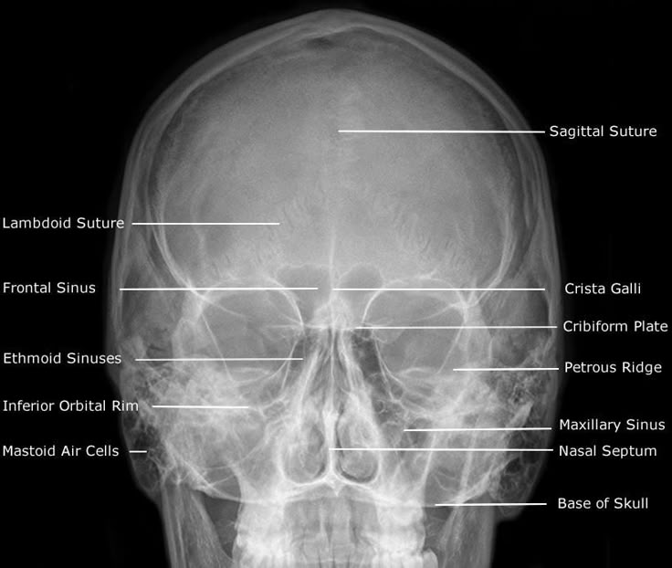
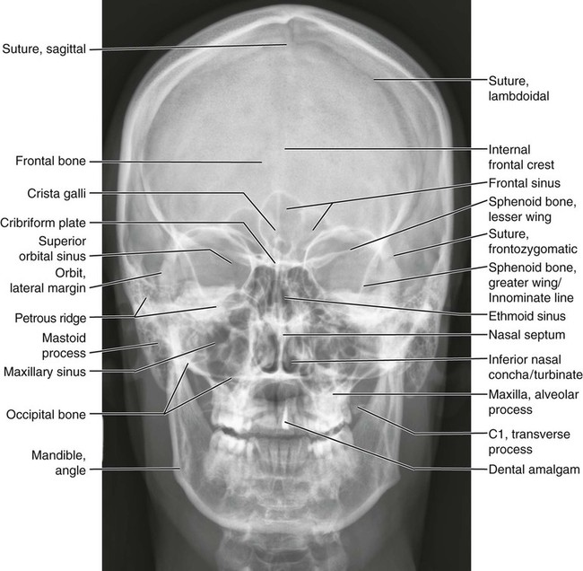
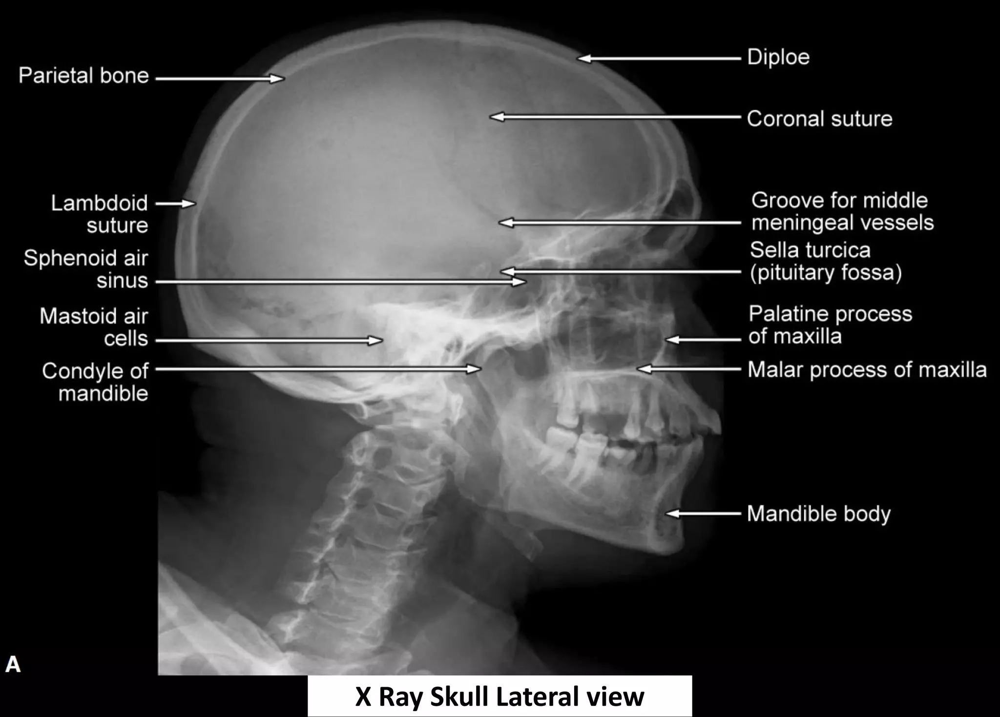

1. عظام القحف (8 عظام)
العظم الجبهي (Frontal Bone): يقع في مقدمة الرأس ويشكل الجبهة ومحجر العين العلوي.
العظمان الجداريان (Parietal Bones): يقعان في أعلى وجانبي الجمجمة ويلتقيان في المنتصف.
العظمان الصدغيان (Temporal Bones): يقعان في جانبي الجمجمة وتحتويان على الأذن الداخلية.
العظم القذالي (Occipital Bone): يقع في مؤخرة وأسفل الجمجمة ويحتوي على فتحة الحبل الشوكي.
العظم الوتدي (Sphenoid Bone): يقع في قاعدة الجمجمة ويشبه الفراشة ليربط عظام القحف.
العظم الغربالي (Ethmoid Bone): يقع بين العينين وفي سقف التجويف الأنفي.
2. عظام الوجه (14 عظماً)
الفك العلوي (Maxilla): يشكل الفك العلوي وسقف الحنك ومحجر العين.
الفك السفلي (Mandible): أقوى عظم في الوجه وهو العظم المتحرك الوحيد بالجمجمة.
عظما الوجنة (Zygomatic Bones): يشكلان بروز الخدين.
العظمان الأنفيان (Nasal Bones): يشكلان جسر الأنف العظمي.
عظام دموع والقرينات والحنك والميكعة: تدعم تجويف الأنف وبنية الفم والفواصل الداخلية.
📷 صورة شعاعية توضيحية (CT Scan)
تظهر في الصورة أدناه المقاطع العرضية لعظام الجمجمة والدماغ:

📷 المعرض الشعاعي للجمجمة والدماغ
📷 المعرض الشعاعي للجمجمة
1 صور شعاعية

صور شعاعيه مهمة.

💡 ملاحظة شعاعية هامة
تظهر هذه العظام بدقة فائقة عبر تقنية الأشعة المقطعية (`CT Scan`) لتشخيص الكسور المعقدة، والنزيف الدماغي، وتخطيط العمليات الجراحية.